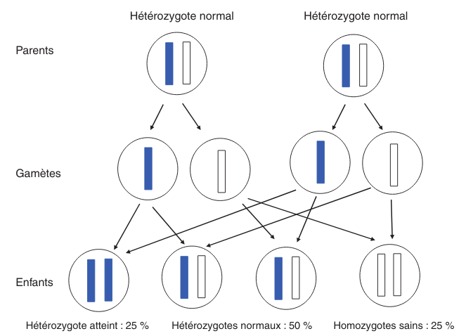

Génétique
Alexis
Chap 5 QCM 1

Les couples A-B et C-D vous consultent pour un conseil génétique. La sœur de Mme B et de Mr C était atteinte d’une maladie de Hurler. Il s’agit d’une maladie récessive autosomique qui atteint un enfant sur 90 000 naissances (1/90 000) Concernant le risque de Mme B d’être hétérozygote pour la maladie de Hurler, quelle(s) proposition(s) est (sont) exacte(s) ?
- Le risque pour Mme B d’être hétérozygote pour la maladie de Hurler est de 1/2
- Le risque pour Mme B d’être hétérozygote pour la maladie de Hurler est de 2/3
- Le risque pour Mme B d’être hétérozygote pour la maladie de Hurler est de 1/4
- Le risque pour Mme B d’être hétérozygote pour la maladie de Hurler est celui de la population générale
- Ce risque est indépendant du sexe de l’individu

Chap 5 QCM 2
Concernant le risque de Mr C et Mme D d’être hétérozygote pour la maladie de Hurler, quelle(s) proposition(s) est (sont) exacte(s) ?
- Le risque pour Mr C d’être hétérozygote pour la maladie de Hurler est de 1/4
- Le risque pour Mr C d’être hétérozygote pour la maladie de Hurler est de 2/3
- Le risque pour Mme D d’être hétérozygote pour la maladie de Hurler est de 1/4
- Le risque pour Mme D d’être hétérozygote pour la maladie de Hurler est de 1/3
- Le risque pour Mme D d’être hétérozygote pour la maladie de Hurler est de 1/8
Chap 5 QCS 1
En vous servant de la loi de Hardy-Weinberg, quel est le risque que Mr A soit hétérozygote pour la maladie de Hurler ?
- 1/75
- 1/600
- 1/300
- 1/150
- 1/200
\(q^2 = \frac{1}{90 000}\) donc \(q = \frac{1}{300}\).
Or on veut connaître \(2 p q\) et on sait que \(p = 1 - q \approx 1\)…
Chap 5 QCS 2
Quel est le risque pour le couple A-B d’avoir un enfant atteint de la maladie de Hurler ?
- 1/2 400
- 1/1 200
- 1/1 800
- 1/4 800
- 1/900
Probabilité du père de lui passer 1 allèle atteint = \(\frac{1}{150} \times \frac{1}{2}\)
Probabilité de la mère de lui passer 1 allèle atteint = \(\frac{2}{3} \times \frac{1}{2}\)
Chap 5 QCS QCS 3
Quel est le risque pour le couple C-D d’avoir un enfant atteint de la maladie de Hurler ?
- 1/128
- 1/32
- 1/24
- 1/12
- 1/48
Chap 7 QCS 1
QCS 1 En salle de naissance, on vous confie un enfant qui présente un retard de croissance important et diverses malformations. Vous évoquez une possible triploïdie. Pour confirmer votre suspicion, vous prescrivez :
- Un séquençage de tout le génome
- Un caryotype constitutionnel sur lymphocytes
- Une FISH avec une sonde du chromosome 21
- Un Southern blot
- Aucune de ces techniques
FISH vs caryotype Techniques d’étude Le caryotype Si le caryotype a été une technique précieuse qui a permis historiquement l’identification de la majorité de ces anomalies, c’est une technique difficile, sujette à des contraintes pratiques, comprenant plusieurs étapes qui vont du recueil du prélèvement dans des conditions stériles au transport dans du milieu permettant la survie des cellules tumorales jusqu’à la mise en culture de ces cellules afin d’obtenir des cellules en division et leur analyse au stade de métaphase. Le temps de culture est variable en fonction du type tumoral et du type de culture (en suspension ou culture de cellules adhérentes). Il peut aller de 72 heures à 15 jours. Certaines tumeurs sont difficiles à faire pousser in vitro. Les échecs de culture sont assez fréquents. Les fibroblastes du microenvironnement peuvent proliférer mieux que les cellules tumorales. Son interprétation pose problème. Comment interpréter un caryotype sans anomalie ? Est-ce une cellule tumorale ou une cellule du microenvironnement ? Certaines anomalies comme les amplifications sont difficiles à identifier. Contrairement aux hémopathies, les tumeurs solides sont souvent polyclonales et leur caryotype peut être extrêmement complexe avec de multiples anomalies non identifiables. Beaucoup de tumeurs sont polyploïdes. La sensibilité de cette technique n’est pas bonne (10 Mb environ) mais elle permet une analyse globale cellule par cellule des altérations. Si le caryotype hématologique est très répandu dans les laboratoires de cytogénétiques, celui des tumeurs solides l’est peu. Il est supplanté par les techniques de cytogénétique moléculaire comme la FISH, notamment sur coupe en paraffine et la CGH-array. La FISH Elle peut être réalisée de première intention ou en complément du caryotype ou du profil moléculaire par CGH-array. Elle peut être réalisée sur préparation cytogénétique, apposition, empreinte, cryocoupe ou coupe en paraffine. Ces dernières ont l’avantage de garder l’architecture tumorale ce qui peut être précieux en cas de faible cellularité tumorale tout en permettant des études rétrospectives. C’est la technique de choix pour la recherche d’amplification. Mais chaque gène à son critère d’amplification et il faut se méfier des fortes polysomies qui peuvent exister dans certaines tumeurs si on utilise des critères n’intégrant pas une sonde contrôle. La CGH-array C’est une étude globale du génome qui ne révèle que les variations du nombre de copies du génome, notamment les amplifications par rapport à un niveau médian. Un contrôle histologique de la cellularité tumorale de l’échantillon utilisé est nécessaire et généralement, un minimum de 50 % de cellules tumorales est requis. Des techniques se développent pour l’utiliser sur paraffine. Elle ne permet de visualiser ni les translocations ni le caractère polyclonal des tumeurs. En 2011, un phénomène appelé chromothripsis a été décrit par Stephens et al. [9] suite à une technique de NGS. Il s’agit d’une catastrophe mitotique qui engendre une multitude de microremaniements (duplication, inversion, délétion) intéressant un (le plus souvent) mais parfois jusqu’à quatre chromosomes ou régions chromosomiques. Ils ont estimé la fréquence de ce phénomène dans les tumeurs à 2,5 % (et 5 % des tumeurs osseuses) en regardant le profil moléculaire par CGH-array. La théorie de l’accumulation progressive d’anomalies est remise en question par ce processus. Cela a été corrélé à un mauvais pronostic dans certaines tumeurs. Le Southern blot permet l’étude d’un fragment d’ADN particulier au sein du génome après transfert des fragments d’ADN d’un gel d’électrophorèse sur une membrane
Chap 13 Question condensée
QCS 1 Un hypertélorisme est défini par :
- Un rapport distance intercanthale externe/distance intercanthale interne > 1/3
- Un rapport distance intercanthale interne/distance intercanthale externe > 1/3
- Un rapport distance intercanthale interne/distance intercanthale externe < 1/3
- Un rapport distance intercanthale externe/distance intercanthale interne < 1/3
- Un rapport longueur des fentes palpébrales/ distance intercanthale > 1/2
QCS 2 Un télécanthus se définit par :
- Des fentes palpébrales étroites
- Une chute de la paupière supérieure
- Un déplacement latéral des canthi internes
- Un déplacement latéral des canthi externes
- Aucun item n’est exact
QCS 3 Un hypotélorisme se définit par :
- Un repli à l’angle interne de l’œil
- Une diminution de l’écartement entre les yeux
- Un déplacement latéral des canthi internes
- Un déplacement latéral des canthi externes
- Aucun item n’est exact
QCS 4 Une clinodactylie se définit par :
- Un pouce surnuméraire
- Le blocage d’une articulation en flexion
- La présence d’un sixième doigt au bord cubital
- Une absence de phalange médiane
- Aucun item n’est exact
Chap 15
QCM 1 Parmi les propositions suivantes concernant le diagnostic prénatal par échographie, laquelle/lesquelles est/sont vraie(s) ?
- La mesure de la clarté nucale est obtenue à l’échographie de 22 SA
- Un syndrome de Turner peut être révélé par une nuque épaisse
- La découverte d’une nuque épaisse justifie la réalisation d’un caryotype fœtal
- Une interposition linguale est généralement détectée à l’échographie de 12 SA
- Les trois échographies prénatales recommandées à toute femme enceinte sont réalisées à 12, 22 et 32 SA
QCM 2 Parmi les propositions suivantes concernant les prélèvements réalisés en DPN, laquelle/lesquelles est/sont vraie(s) ?
- L’amniocentèse est réalisée à partir de 12 SA
- L’amniocentèse présente un risque de fausse couche de 0,1 %
- La trophocentèse permet l’établissement d’un caryotype en 24-48 heures
- Une détermination de sexe fœtal sur sang maternel peut être réalisée seulement à partir de 11 SA
- Le caryotype obtenu après culture de villosités choriales est établi à partir de cellules plus proches embryologiquement du fœtus que celles utilisées pour celui de l’examen direct
QCM 3 Parmi les propositions suivantes concernant les méthodes de dépistage prénatal, laquelle/lesquelles est/sont vraie(s) ?
- La mesure de la clarté nucale est un élément essentiel au dépistage combiné de la trisomie 21
- Le dosage de l’α-fœtoprotéine est un élément essentiel au dépistage combiné de la trisomie 21
- Le dépistage combiné est réalisé au premier trimestre de la grossesse
- Le dépistage séquentiel intégré est réalisé au premier trimestre de la grossesse
- L’ADN fœtal circulant permet le dépistage de la trisomie 21 sur sang maternel
QCM 4 Parmi les propositions suivantes concernant l’identification d’une mosaïque 46,XX/47,XX,+21 obtenue à l’examen direct après trophocentèse, laquelle/lesquelles est/sont vraie(s) ?
- Une contamination par des cellules maternelles doit être suspectée
- Une trisomie 21 en mosaïque vraie doit être suspectée
- Une mosaïque confinée au placenta doit être suspectée
- Une IMG peut être proposée au regard de ces résultats
- Le caryotype permet de distinguer une contamination maternelle d’une trisomie 21 en mosaïque vraie
QCM 5 Parmi les propositions suivantes, quelles sont celles justifiant un diagnostic préimplantatoire en France ?
- Un couple ayant eu un enfant atteint d’une myotonie de Steinert
- Un couple ayant eu un enfant atteint de daltonisme
- Une mère conductrice de myopathie de Duchenne n’ayant pas eu d’enfant atteint
- Un antécédent de trisomie 21 libre et homogène
- Un couple dont les deux membres ont une mutation p.Phe508del à l’état hétérozygote
Chap 16
QCM QCM 1 Concernant les prélèvements nécessaires pour les dépistages biochimiques :
- Il peut être fait durant le 2e jour de vie
- Il peut être fait dans le 3e jour de vie
- Les prélèvements sont collectés sur un buvard
- Les prélèvements sont envoyés à un centre régional
- Une information spécifique est donnée au préalable du prélèvement
QCM 2 Concernant les prélèvements nécessaires pour les dépistages biochimiques :
- Un consentement signé est nécessaire pour l’évaluation du risque de drépanocytose
- Un consentement signé est nécessaire pour l’évaluation du risque de la mucoviscidose
- Un consentement signé est nécessaire pour l’évaluation du risque de l’hyperplasie surrénale congénitale
- Un enfant dont les deux parents sont nés aux Antilles doit bénéficier du dépistage ciblé de la drépanocytose
- Un enfant dont la mère est née au Maghreb et dont le père n’est pas connu doit bénéficier du dépistage ciblé de la drépanocytose
QCM 3 Concernant les maladies dépistées par le dépistage biochimique :
- Le taux de faux positif pour l’hyperplasie surrénale congénitale est important chez les enfants prématurés
- Le dépistage de l’hypothyroïdie en France ne permet pas le dépistage des hypothyroïdies d’origine hypophysaire
- Un dosage des hormones thyroïdiennes est nécessaire chez les enfants présentant une malformation médiane de la face
- Les hyperphénylalaninémies sont toutes liées à un déficit de la phénylalanine hydroxylase
- Une malformation génitale est souvent associée aux formes sévères d’hyperplasie surrénale congénitale chez les nouveaux nés 46,XX
QCM 4 Concernant le conseil génétique après dépistage :
- Le dépistage de la drépanocytose permet de mettre en évidence la plupart des sujets hétérozygotes au locus β-globine
- Le dépistage de la mucoviscidose permet de mettre en évidence la plupart des sujets hétérozygotes au locus CFTR
- Un sujet porteur d’une forme classique d’hyperplasie surrénale est homozygote ou hétérozygote composite pour des allèles sévères
- Le frère normal d’un sujet porteur d’une mucoviscidose à 2/3 de risque d’être hétérozygote si ses parents sont de phénotype habituel
- Un sujet porteur d’une surdité dépistée en période néonatale a le plus souvent un parent sourd
QCM 5 Concernant le dépistage de la surdité :
- Il est fondé sur l’utilisation des otoémissions acoustiques ou des PEA
- La valeur prédictive négative du test est bonne
- Tous les types de surdité sont détectables en période néonatale
- L’objectif principal est de permettre la prise en charge précoce d’une surdité sévère permettant la mise en place d’une communication verbale si possible
- Le nombre des faux positifs est important
Chap 18
QROC 1 Citez les principes à respecter lors de la prescription et la réalisation de tests génétiques (examens des caractéristiques génétiques de la personne). QROC 2 Caractéristiques de l’information préalable au recueil du consentement. QROC 3 Caractéristiques de l’information lors du rendu de résultat. QROC 4 Dans quelles circonstances faut-il mettre en œuvre la démarche d’information familiale en génétique ? QROC 5 Lorsqu’une affection génétique est diagnostiquée, qui doit informer la parentèle ? QROC 6 Conditions de prescription des tests génétiques pour les mineurs et les majeurs sous tutelle.
Chap 19
QROC 2 À quelles conditions la loi autorise-t-elle le recours à l’interruption de grossesse pour motif médical ?
Chap 22
QCM 2 Dans la famille représentée ci-dessous, les garçons II.1 et II.2 sont atteints du syndrome de l’X fragile (FXS). On a indiqué le nombre de triplets CGG dans le gène FMR1 pour la mère et les enfants. Indiquez la/les proposition(s) vraie(s) : u22-02-9782294745218
- Le garçon II.2 présente une déficience intellectuelle plus importante que son frère II.1
- La femme I.2 peut avoir des enfants porteurs d’un allèle normal, d’une prémutation ou d’une mutation complète
- Il n’y a pas d’autre cas de déficience intellectuelle dans la famille. I.2 rapporte simplement une ataxie chez son père depuis l’âge de 65 ans mais cela ne peut pas avoir de lien avec le gène FMR1
- Le génotype de II.4 a été déterminé dans le cadre d’un diagnostic prénatal et a mis en évidence chez le fœtus de sexe féminin respectivement 30 et 300 répétitions CGG. Vous annoncez aux parents qu’il s’agit d’une mutation complète et que le pronostic est le même que pour un garçon
QCM 3 Dans la famille représentée ci-dessous, l’enfant III.2, fille âgée de 4 ans présente un retard des acquisitions et des troubles du comportement de type autistique qui a fait évoquer un syndrome de l’X fragile (FXS) qui a été confirmé par la mise en évidence d’une mutation complète dans le gène FMR1. Quelle(s) sont la/les proposition(s) juste(s) ? u22-03-9782294745218
- La mère ou le père de la patiente III.2 est porteur d’une prémutation et leurs sœurs respectives (II.2 et II.5), qui sont enceintes de garçons, sont à risque d’être porteuses de la mutation familiale et d’avoir un fils atteint de FXS. Vous préconisez de faire réaliser d’urgence une analyse génétique chez eux dans le cadre du conseil génétique pour II.2 et II.5
- Vous calculez que si II.3 est prémutée, sa sœur a 75 % de risque de l’être également
- Après analyse génétique, il s’avère que la mère de la patiente III.2 est porteuse d’une prémutation. Cette jeune femme, II.3, a 31 ans et le souhait d’un troisième enfant. Vous l’informez qu’étant porteuse d’une prémutation, sa fertilité peut être impactée
- Les enfants des patients porteurs d’une mutation du FXS sont tous porteurs d’une mutation complète car la mutation ne rétracte pratiquement jamais vers une prémutation ou un allèle normal
QCM 4 QCM 7 Dans le cas de la myotonie de Steinert, indiquez quelle(s) sont la/les proposition(s) juste(s) ?
- C’est une maladie responsable d’une forme congénitale de maladie musculaire qui est extrêmement rare chez l’adulte
- Une cataracte peut être la seule expression clinique de la myotonie de Steinert
- Au sein d’une famille, si différentes formes cliniques sont observées, elles ont tendance à s’aggraver au cours des générations
- Il n’y a pas d’atteinte cognitive dans la myotonie de Steinert
Chap 23
QCM 5 Quelle(s) est/sont la/les caractéristique(s) des cancers du sein associés aux mutations du gène BRCA1 ?
- La rapidité évolutive
- Le profil triple négatif vis-à-vis des récepteurs aux œstrogènes à la progestérone et de l’amplification d’ERBB2
- Une sensibilité particulière aux inhibiteurs de PARP
- Leur présentation multifocale
- Leur bon pronostic
Chap 27
QCM 1 Dans le cadre du dépistage de la trisomie 21, le calcul du dépistage combiné proposé au premier trimestre est basé sur :
- La mesure de la clarté nucale
- L’âge maternel
- L’âge paternel
- les antécédents d’anomalie chromosomique dans la fratrie
- La présence d’une cardiopathie congénitale
QCM 2 Quel suivi régulier doit être proposé aux enfants porteurs d’une trisomie 21 ?
- ORL
- Ophtalmologique
- Cardiaque
- Urologique
- Orthopédique
QCM 3 Quelle(s) complication(s) est/sont à redouter chez l’adulte trisomique 21 ?
- Sécheresse cutanée
- Cataracte
- Dysurie
- Syndrome parkinsonien
- Syndrome démentiel de type Alzheimer
QCM 4 Quelles complications sont à redouter durant la première année de vie chez un(e) enfant porteur/euse de trisomie 21 ?
- Cataracte
- Leucémie aiguë
- Syndrome de West
- Apnées du sommeil
- Maladie cœliaque
QCM 5 Les enfants porteurs de trisomies 21 sont plus fréquemment soumis à :
- Apnées du sommeil
- Infections
- Tumeurs solides
- Instabilité C1-C2
- Diabète
QCM 6 La prise en charge des enfants porteurs de trisomie 21 :
- N’est pas forcément multidisciplinaire
- Nécessite l’investissement des parents
- Nécessite de l’orthophonie
- Ne nécessite pas d’aide psychologique
- Nécessite un apport vitaminique augmenté
QCM 7 L’adulte porteur de trisomie 21 :
- Ne peut pas travailler
- Doit rester chez ses parents
- Doit généralement être mis sous une mesure de protection
- Peut intégrer une structure de type ESAT
- Ne peut pas pratiquer de sport
QCM 8 Quelle(s) est(sont) la(les) malformation(s) digestive(s) la(les) plus fréquente(s) chez un nouveau-né trisomique 21 ?
- Imperforation anale
- Atrésie duodénale
- Atrésie de l’œsophage
- Présence d’une rate surnuméraire
- Mésentère commun
QCM 9 Quelles formules chromosomiques sont compatibles avec un tableau clinique de trisomie 21 ?
- 47,XXY
- 45,XX,der(14 ;21)(q10 ;q10)
- 45,X
- 47,XY,+21
- 46,XY,der(14;21)(q10;q10),+21
QCS 1 Le diagnostic de trisomie 21 en période anténatale s’effectue avec :
- Le dosage des marqueurs sériques maternels
- L’échographie
- L’âge de la mère
- L’âge du père
- Le caryotype fœtal
QCS 2 Quelle est la malformation à rechercher en priorité à la naissance chez un enfant porteur de trisomie 21 ?
- Cardiaque
- Digestive
- Rénale
- Cérébrale
- Vertébrale
QCS 3 Quel organisme est chargé de l’orientation des enfants trisomiques 21 ?
- SESSAD
- CAMSP
- MDPH
- CLIS
- CDES
QCS 4 Quelle complication biologique doit être recherchée régulièrement chez les enfants porteurs de trisomie 21 ?
- Hyperuricémie
- Anémie
- Hypothyroïdie
- Hypernatrémie
- Protéinurie
QCS 5 Quelle complication néoplasique est à redouter particulièrement chez les enfants porteurs de trisomie 21 ?
- Lymphome
- Sarcome
- Tumeur cérébrale
- Leucémie aiguë myéloïde
- Hépatocarcinome
QCS 6 Quel est le type cytogénétique le plus fréquent de trisomie 21 ?
- Trisomie 21 en mosaïque
- Trisomie 21 par translocation robertsonienne
- Trisomie 21 par translocation réciproque
- Trisomie 21 libre et homogène
- Trisomie 21 partielle
QCS 7 Quel est le risque de récurrence de trisomie 21 pour un couple ayant eu un enfant porteur de trisomie 21 secondaire à une mauvaise disjonction d’une translocation 14 ; 21 d’origine maternelle ?
- 1 %
- 100 %
- 50 %
- 15 %
- 3 %
QCS 8 Quel est le risque de récurrence de trisomie 21 pour un couple ayant eu un enfant porteur d’une trisomie 21 libre et homogène ? L’âge de la femme est de 30ans :
- 1 %
- 100 %
- 50 %
- 15 %
- 2 %
QCS 9 Trisomie 21 et procréation :
- Les adultes porteurs de trisomies 21 sont stériles
- Les enfants nés d’hommes trisomiques 21 sont tous porteurs de T21
- Seulement les hommes porteurs de T21 sont stériles
- Les personnes trisomiques 21 (T21 libre) ont un risque théorique de 50 % de conception trisomique 21
- Les femmes trisomiques 21 n’ont pas de risque de donner naissance à un enfant trisomique 21
QCS 10 Les enfants porteurs de trisomie 21 :
- N’acquièrent jamais la marche
- Acquièrent le langage à la même période que les enfants non trisomiques
- Ont une sensibilité à la douleur augmentée
- Ne doivent pas être vaccinés
- Peuvent réagir différemment à certains médicaments
QCS 11 La trisomie 21 :
- Touche uniquement les populations européennes
- Est la première cause de déficience intellectuelle d’origine génétique
- Est médicalement nommé « mongolisme »
- Est une pathologie acquise
- Ne peut pas être diagnostiqué en période néonatale
Chap 28
QCM 1 La mucoviscidose est diagnostiquée classiquement en France :
- Sur signes cliniques de bronchopathie chronique dans les premières années de vie
- Au cours du suivi échographique de la grossesse par la découverte d’un intestin hyperéchogène
- Par un dépistage systématique des nouveau-nés au troisième jour de vie
QCS 1 La mucoviscidose est une maladie monogénique :
- Qui se transmet selon un mode de transmission dominant
- Qui se transmet selon un mode de transmission récessif lié à l’X
- Qui se transmet selon un mode de transmission autosomique récessif avec une pénétrance incomplète
- Qui se transmet selon un mode de transmission récessif avec pénétrance complète
QCS 2 Le gène de la mucoviscidose (le gène CFTR) a été cloné :
- Grâce à une stratégie gène candidat
- Par une étude réussie de GWAS (pour genome-wide association study)
- Par une étude directe en s’appuyant sur la connaissance de la séquence de la protéine
- Par une stratégie de clonage positionnel
QCS 3 La fréquence des porteurs à l’état hétérozygote d’une mutation dans le gène CFTR dans la population française est de :
- 1/100
- 1/50
- 1/30
- 1/500
QCS 4 Quel est le risque pour un couple pris au hasard dans la population de donner naissance à un enfant atteint de mucoviscidose ?
- 1/10 000
- 1/4 000
- 1/50 000
QCS 5 Quel est le risque a priori de donner naissance à un enfant atteint pour un couple dont l’un des conjoints est porteur d’une mutation dans le gène CFTR :
- 1/60
- 1/120
- 1/240
- 1/500
QCS 6 Quel est le risque a priori d’être porteur d’une mutation dans le gène CFTR pour le frère non malade d’un sujet atteint :
- 1/2
- 2/3
- 1/4
- 1/8
QCS 7 La mutation F508del (p.Phe508del) est la mutation la plus fréquente du gène CFTR. Il s’agit :
- D’une mutation d’épissage
- D’une mutation troncative
- D’une délétion rompant le cadre de lecture
- D’une délétion respectant le cadre de lecture
QCS 8 La majorité des 2 000 mutations identifiées dans le gène CFTR responsable de la mucoviscidose sont des mutations :
- Faux-sens
- Non-sens
- Des insertions/délétions
- Des expansions de triplets
- Des grands réarrangements génomiques
Chap 29
QCM 1 Concernant le syndrome de l’X fragile, quelles sont les propositions vraies ?
- Il s’agit de la forme de déficience intellectuelle d’origine génétique la plus fréquente
- La macro-orchidie est un élément essentiel du diagnostic chez les jeunes garçons
- Les patients présentent souvent des troubles du spectre autistique
- Certains patients ont un QI dans les normes
- Les conductrices peuvent présenter une déficience intellectuelle
QCM 2 Concernant les prémutations du gène FMR1, quelles sont les propositions vraies ?
- Elles correspondent aux allèles comportant 55 à 250 répétitions CGG
- Le risque qu’elles soient transmises par un homme porteur à toutes ses filles est proche de 100 %
- Elles sont associées à un risque d’insuffisance ovarienne prématurée
- Le risque de syndrome neurodégénératif à début tardif (FXTAS) ne concerne que les hommes
- Elles peuvent passer à la mutation complète lors d’une transmission paternelle
QCS 1 Concernant le syndrome de l’X fragile, quelles sont les propositions vraies ?
- Il est peut-être causé par une mutation ponctuelle du gène FMR1
- Les mutations surviennent le plus souvent de novo
- La CGH-array confirme le diagnostic chez la plupart des patients
- Les caractéristiques faciales ne sont ni constantes ni spécifiques
- Le diagnostic prénatal peut être proposé à une femme dont le conjoint est porteur d’une prémutation
Bonus : PEC BRCA
Prise en charge des femmes porteuses d’une mutation d’un gène BRCA ■ À partir de 20 ans, palpation des seins et des creux axillaires tous les 6 mois. ■ À partir de 30 ans, ou 5 ans avant le cas de cancer du sein s’il existe un cas avant 30 ans, IRM mammaire annuelle, complétée d’une seule incidence de mammographie. ■ Avant 40 ans, en particulier chez les porteuses d’une mutation de BRCA1, après information, temps de réflexion et accompagnement psychologique mastectomie prophylactique. ■ Après 40 ans et tout projet parental, annexectomie prophylactique.
Bonus: Lynch
Bonus: PEC MMR
Prise en charge des porteurs et porteuses d’une mutation d’un gène MMR ■ À partir de 20 ans, chromocoloscopie complète tous les deux ans. ■ À partir de 30 ans, échographie endovaginale avec prélèvement endométrial par Pipelle de Cornier tous les deux ans. ■ Après 40 ans et accomplissement du projet parental, hystérectomie avec ovariectomie prophylactique.
Bonus: noms des gènes
| Forme héréditaire de cancer | Gène | Name |
|---|---|---|
| I. Activation constitutive de la cascade de transduction | ||
| Cancer médullaire de la thyroïde (CMT) | RET | REarranged during Transfection |
| Cancer papillaire du rein | MET | Mesenchymal Epithelial Transition |
| Maladie de Cowden | PTEN | Phosphatase and TENsin homolog, |
| Maladie de Von Hippel Lindau | VHL | idem |
| Médulloblastome | SUFU | Suppressor Of Fused Homolog (hedgehog !) |
| Neurofibromatose de type I | NF1 | idem |
| Polypose adénomateuse familiale | APC | Adenomatous Polyposis coli |
| Syndrome de Gorlin | PTCH | PaTCH |
| Tumeur de Wilms | WT1 | Wil’s Tumor |
| II. Altération des points de contrôles du cycle cellulaire | ||
| Rétinoblastome | RB1 | idem |
| Mélanome malin | CDKN2A | Cyclin Dependent Kinase Inhibitor |
| Syndrome de Li-Fraumeni | TP53 | Tumor Protein |
| III. Altération des systèmes de réparation de l’ADN | ||
| Cancer du sein et de l’ovaire | BRCA1, BRCA2 | BReast CAncer |
| Polypose adénomateuse autosomique récessive | MUTYH | Mut Y DNA glycosylase |
| MLH1 | MuLt Homolog | |
| Syndrome de Lynch | MSH | DNA repair MiSmatcH |
| Xeroderma pigmentosum | XP | idem |
| Autres | ||
| Cancers bronchiques | ALK | Activin receptor-Like Kinase 1 |
| Carcinomes colique, bronchiques | KRAS | Kirsten RAt Sarcoma viral oncogene homolog |
| Carcinomes sein, ovaire | HER2 | Human Epidermal growth factor Receptor 2 |
| Carcinomes+++, gliomes | EGFR | Epidermal Growth Factor Receptor |
| GastroIntestinal STromal Tumor | KIT | |
| Leucémies aigües myéloïdes | FLT3 | Fms-Like Tyrosine kinase 3 |
| Leucémies, mélanomes | NRAS | Neuroblastoma-RAS |
| Lymphome de Burkitt | C-MYC | Cellular MYeloCytomatosis |
| Lymphomes du manteau | Cycline D | |
| Mélanome | CD4 | Cluster of differentiation 4 |
| Mélanomes | BRAF | |
| Neuroblastomes | N-MYC | |
| Sarcomes, gliomes | PDGFR | Platelet-derived growth factor receptors |